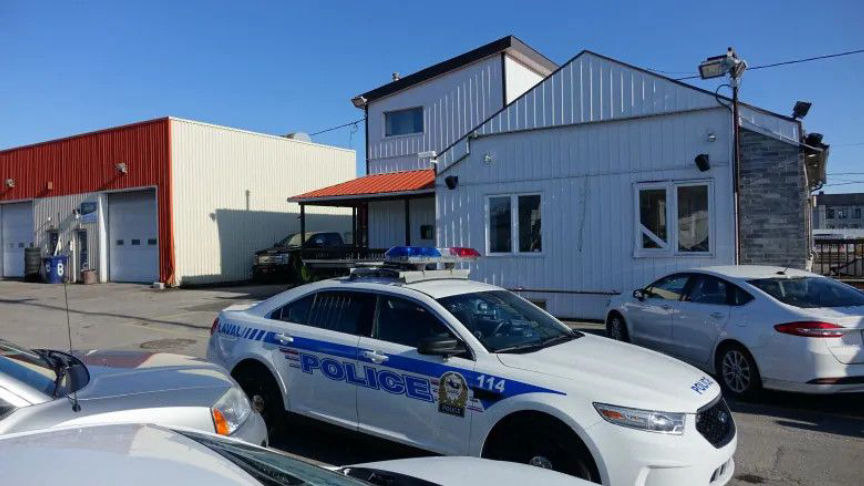
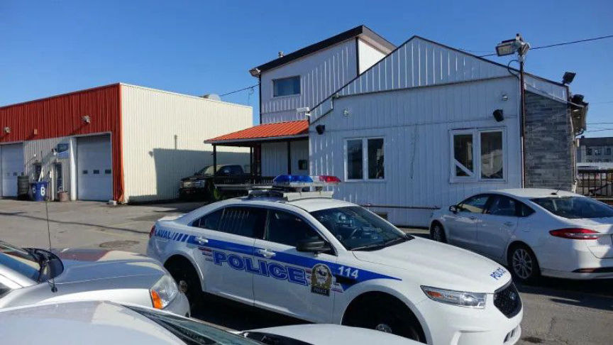

Canada: Feds are Investigating a Prolific Xanax Dealer
A massive police operation is underway in Canada where more than 200 police officers have been executing search warrants throughout 12 cities in an attempt to shut down a massive drug production and distribution network. The investigation began in February 2018 after law enforcement seized almost 200 packages of Xanax.
TVA Nouvelles reported that since the morning of June 4, nearly 235 law enforcement officers have been searching houses in Laval, Montreal, Terrebonne, Saint-Lin-Laurentides, Sainte-Anne-des-Plaines, Saint-Eustache, and Sainte-Adèle. A total of 12 cities have been targeted in the operation so far. Sgt. Geneviève Major told CBC that at the time of publication, officers had arrested 11 suspects in connection with the drug trafficking network. During the execution of 13 search warrants, officers also seized cocaine; cannabis; methamphetamine; cash; and firearms.
The Canada Border Services Agency intercepted 200 packages filled with counterfeit Xanax in February 2018 and this operation is the result of an investigation into the source of the seized packages of Xanax. Combined, the packages contained almost 200,000 counterfeit Xanax pills. The packages had return addresses that matched various P.O. boxes in Laval and had been shipped to customers in the United States, Australia, and Europe.

Major said that the drug trafficking network had a connection to the Hells Angels but no further details have been released at this time.
Source: @PoliceLaval on Twitter. (Archived Link)
H/T to /u/PharmaSyndicate on Dread.
TVA Nouvelles reported that since the morning of June 4, nearly 235 law enforcement officers have been searching houses in Laval, Montreal, Terrebonne, Saint-Lin-Laurentides, Sainte-Anne-des-Plaines, Saint-Eustache, and Sainte-Adèle. A total of 12 cities have been targeted in the operation so far. Sgt. Geneviève Major told CBC that at the time of publication, officers had arrested 11 suspects in connection with the drug trafficking network. During the execution of 13 search warrants, officers also seized cocaine; cannabis; methamphetamine; cash; and firearms.
The Canada Border Services Agency intercepted 200 packages filled with counterfeit Xanax in February 2018 and this operation is the result of an investigation into the source of the seized packages of Xanax. Combined, the packages contained almost 200,000 counterfeit Xanax pills. The packages had return addresses that matched various P.O. boxes in Laval and had been shipped to customers in the United States, Australia, and Europe.

One Location Searched by Canadian Police
Major said that the drug trafficking network had a connection to the Hells Angels but no further details have been released at this time.
Source: @PoliceLaval on Twitter. (Archived Link)
H/T to /u/PharmaSyndicate on Dread.